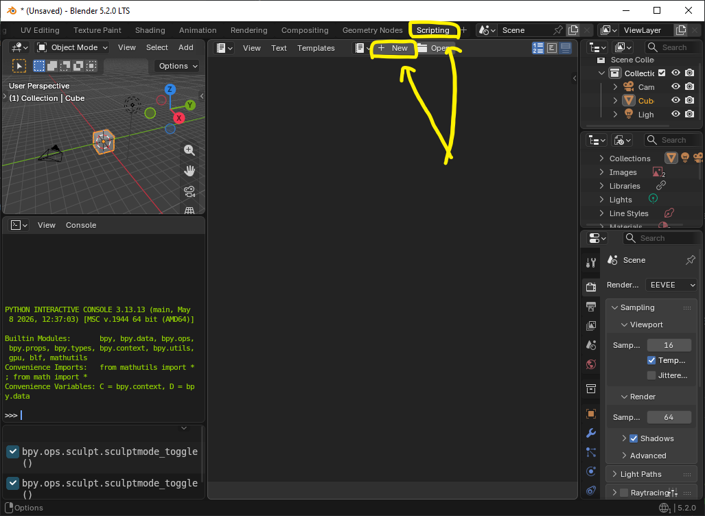
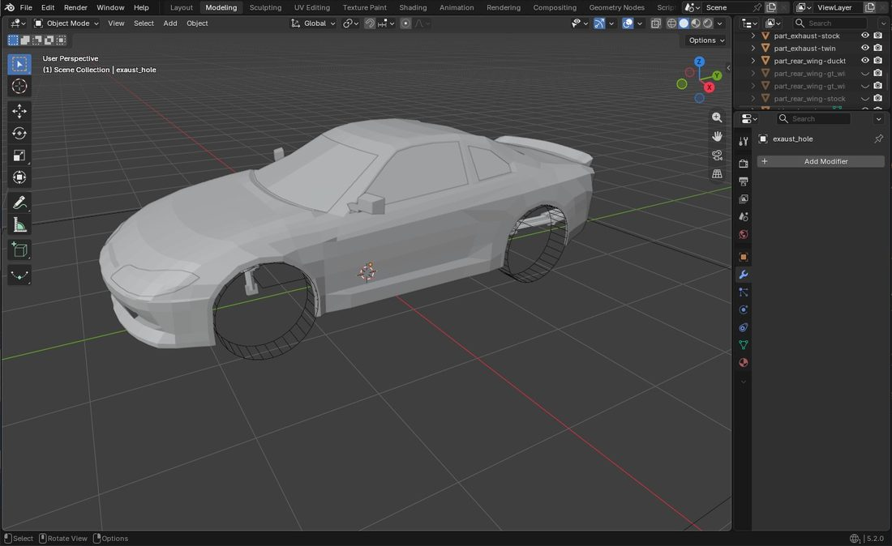
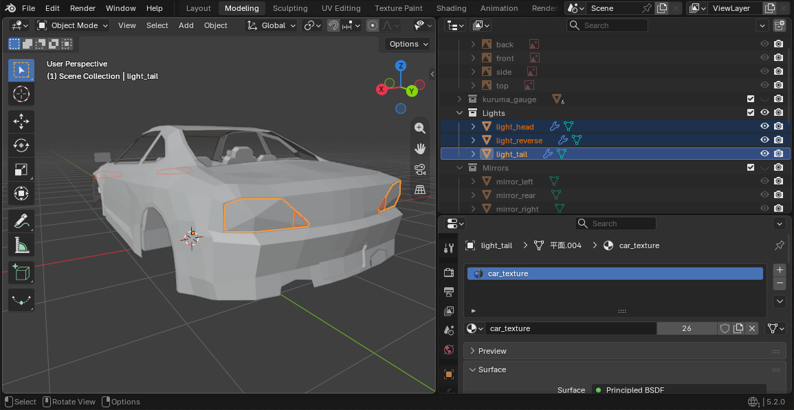
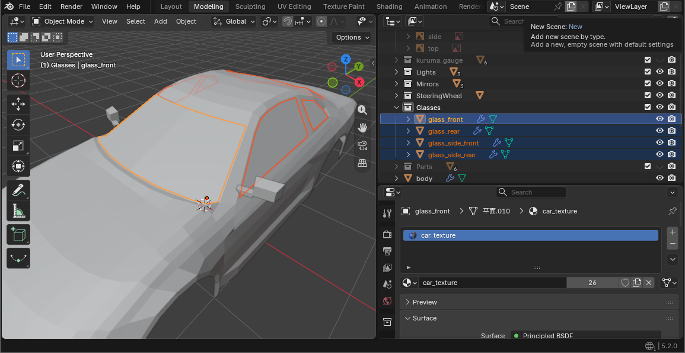
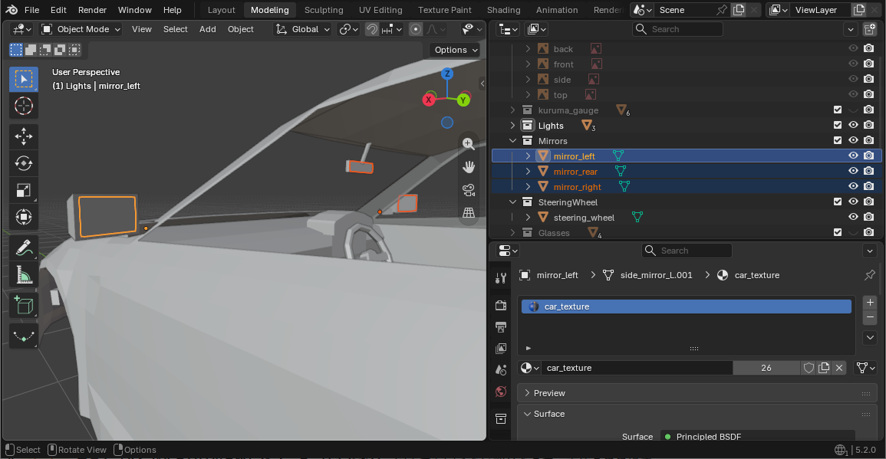
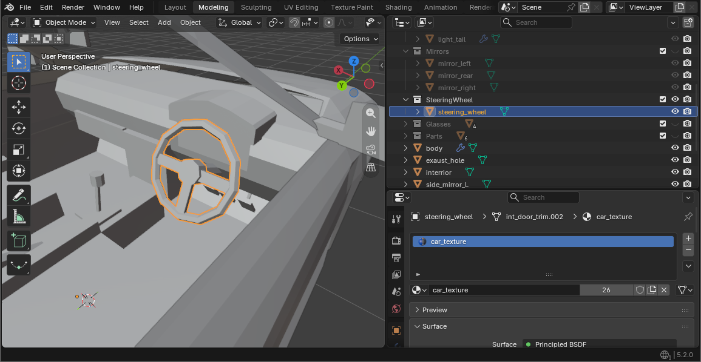
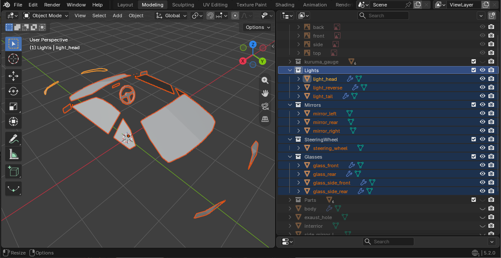

Body model, lights, glass and mirrors, file layout and JSON, sounds, and the spec.車体のモデル、灯火・ガラス・ミラー、置き場所と JSON、音、諸元（走り）。
新しい車を 1 台ゲームに出すのに、これだけは要るという流れです。各手順の詳しいことは、手順の最後にある章にあります。ここでは、パックの名前を mypack、車種の名前を ae86 とします。
The bare minimum to get one new car into the game. Each step links to the chapter with the details. Here the pack is called mypack and the car ae86.
.obj/.mtl) で書き出す。 → 5 章mods/ に入れる。フォルダごとではなく中身を固める → 配布の 1 章これで、自分の車体で、既定の諸元のまま走る車が 1 台増えます。
.obj/.mtl). → chapter 5mods/. Zip what is inside the folder, not the folder itself → chapter 1 of ShippingYou now have one more car: your body, driving on the default spec.
リソースパックで KurumaMod の既定の車を自分の車体に差し替えれば、jar を作らずに F3+T で何度でも試せます。手順は6 章の「A」にあります。
Override KurumaMod's built-in car with your body using a resource pack. No jar needed, and F3+T reloads it as often as you like. See route "A" in chapter 6.
| What you want | Where |
|---|---|
| Working lights, see-through windows, reflecting mirrors | Chapter 3 |
| Paint a texture | Chapter 4 |
| Fix the seat position or the body size | Chapter 6 |
| Change the engine sound | Chapter 7 |
| Change how it drives (weight, engine, suspension) | Chapter 8 |
| Fit your own wheels | Chapter 1 of the Wheel guide |
| Make wings or bumpers swappable | Chapter 2 of the Parts guide |
assets/ の中（モデル・テクスチャ・見た目の JSON・lang）を直したら、ゲームで F3+Tdata/ の中（諸元）を直したら、ゲームで /reloadjar に入れて試しているときは、jar を作り直して入れ替え、ゲームを起動し直します。
assets/ (model, texture, look JSON, lang), press F3+T in gamedata/ (the spec), run /reload in gameIf you are testing from a jar, rebuild the jar, swap it in and restart the game.
META-INF/ が jar の直下にない）。または modId に - や . を使ったdata/mypack/cars/ae86.json の場所か、JSON の書き方が違う。理由はログに出るbody.model のパスか名前空間（mypack:）が違うae86 のまま … lang のキーが car.mypack.ae86 になっていないdesignWheelBase に実際の寸法を書く（6 章）ほかの症状は配布の 3 章にあります。
META-INF/ is not at the top of the jar), or modId contains - or .data/mypack/cars/ae86.json is in the wrong place or not valid JSON. The reason is in the logbody.model path or namespace (mypack:) is wrongae86 — the lang key is not car.mypack.ae86designWheelBase (chapter 6)Other symptoms are in chapter 3 of Shipping.
車体を作る前に、寸法の目安になる枠（ゲージ）を Blender に置きます。ゲージに合わせて作れば、JSON の寸法は既定のままで済みます。
Before you model, put a reference frame (the gauge) into Blender. Build to it and the sizes in the JSON can stay at their defaults.
Scripting タブを開き、新規（New）を押す。modeling_tools/blender_gauge.py の中身を全部貼り付けて、実行する。▶ を押すか Alt+Pこれで、タイヤ 4 つ・地面・シャシー基準面がワイヤーフレームで置かれます。
Scripting tab at the top and press New.modeling_tools/blender_gauge.py and run it. Press ▶ or Alt+PFour wheels, the ground and the chassis plane now appear as wireframes.

Scripting タブ（左上）を開き、New を押してから貼り付けますScripting tab (top left), press New, then paste.| 名前 | 何か |
|---|---|
gauge_wheel_FL ほか 4 つ | タイヤの位置と大きさ。ここにタイヤハウスが来るように車体を作る |
gauge_ground | 地面（Z = 0）。ワールド原点はこの高さ |
gauge_chassis_plane | シャシー基準面（Z = 0.602m）。ゲームが車の「位置」とする高さ。4 隅が車軸の真上 |
| Name | What it is |
|---|---|
gauge_wheel_FL and 3 more | Where the wheels sit and how big they are. Build the wheel arches around these |
gauge_ground | The ground (Z = 0). The world origin is at this height |
gauge_chassis_plane | The chassis plane (Z = 0.602 m), the height the game treats as the car's position. Its corners sit right above the axles |
もう一度実行するだけです。前のゲージは消えてから置き直されます。
ゲージは選択できない設定になっています。作業中に間違って動かすことはなく、A で全部を選んでも入りません。
Just run it again. The old gauge is removed before the new one goes in.
The gauge cannot be selected. You cannot move it by accident, and A (select all) leaves it out.
| ホイールベース | 3.12 m（前後輪の距離） |
|---|---|
| トレッド | 1.80 m（左右輪の距離） |
| タイヤ半径 | 0.45 m（直径 90cm） |
| シャシー基準面 | 0.602 m |
実車より 2 割大きめです。Minecraft のプレイヤーはずんぐりしているので、実寸だと車が小さく見えるためです。
| Wheelbase | 3.12 m (front axle to rear axle) |
|---|---|
| Track | 1.80 m (left wheel to right wheel) |
| Wheel radius | 0.45 m (90 cm diameter) |
| Chassis plane | 0.602 m |
That is 20% bigger than a real car. Minecraft players are stocky, and a true-size car looks small next to them.
それでも動きます。実際に作った寸法を、見た目の JSON の designWheelBase（ホイールアーチの前後の距離）に書きます（6 章）。ゲームがその比で車体を拡大・縮小して、ゲージの大きさに合わせます。
It still works. Write the sizes you actually built into designWheelBase (distance between the arches) in the look JSON (chapter 6). The game scales the body by that ratio to fit the gauge size.
スクリプトの先頭の SCALE = 1.2 を 1.0 にします。そのときは諸元（data/<pack>/cars/<car>.json）の wheel_base・track_width・wheel_radius も同じ寸法に揃えます（8 章）。揃えないと、タイヤだけが元の位置と大きさで出ます。
はじめての車では触らないでください。
Change SCALE = 1.2 at the top of the script to 1.0. Then set wheel_base, track_width and wheel_radius in the spec (data/<pack>/cars/<car>.json) to the same sizes (chapter 8). If you don't, the wheels still appear at the old positions and size.
Leave it alone for your first car.
ホイールは車体とは別のファイルで作り、専用のゲージ（modeling_tools/blender_wheel_gauge.py）を使います。ホイールの 1 章を見てください。
Wheels are built in a separate file with their own gauge, modeling_tools/blender_wheel_gauge.py. See chapter 1 of the Wheel guide.
車体のメッシュを作る章です。決まりは原点の位置と向きだけで、大きさと形は自由です。
This chapter is about modelling the body. The only rules are where the origin is and which way the car faces; size and shape are up to you.
これで、書き出せばゲームのタイヤと車体が合います。
Once exported, the body and the in-game wheels line up.

| 高さ | 地面（Z = 0）。車体の底ではない |
|---|---|
| 前後 | 前輪と後輪のちょうど中間。全長の中心とは限らない |
| 左右 | 中央 |
| Height | Ground level (Z = 0), not the underside of the body |
|---|---|
| Front–rear | Exactly halfway between the axles, not necessarily the middle of the overall length |
| Left–right | On the centreline |
合わせるのはワールド原点です。オブジェクトを選んだときに出るオレンジの点（オブジェクト原点）はどこにあっても構いません。
What matters is the world origin. The orange dot you see on a selected object (its object origin) can be anywhere.
車体を全部選び（A）、G で動かします。ゲージは選択できないので一緒には動きません。
Select the whole body (A) and move it with G. The gauge cannot be selected, so it stays put.
ミラーモディファイアを使います。書き出しのときに自動で適用されるので、「適用」は押さなくてかまいません。
ただし、左右のドアミラーの鏡だけは別々のオブジェクトにします（3 章のミラー）。
Use a mirror modifier. The exporter applies it for you, so you don't need to press "Apply".
The one exception is the glass of the two door mirrors, which must be separate objects (mirrors in chapter 3).
分けても分けなくても同じです。ゲームは名前の決まっていないオブジェクトを全部まとめて車体として描きます。同梱の車体は作業のしやすさで body / hood / trunk / bumper_f / bumper_r に分けてあります。
ライト・ガラス・ミラー・ハンドル・付け替える部品だけは名前で働きが決まるので、別のオブジェクト（または別のマテリアル）にします（3 章）。
Split or not, it makes no difference. The game draws every object without a special name as body. The bundled body is split into body / hood / trunk / bumper_f / bumper_r only for convenience while modelling.
Lights, glass, mirrors, the steering wheel and swappable parts are the exception: their names decide what they do, so they need their own objects (or materials) (chapter 3).
作らなくてもかまいません。何も作らなければ、車体の裏面がそのまま内装として見えます。作るなら、ふつうの車体として作れば描かれます。座席の位置は見た目の JSON の seat で決まり、座席のメッシュとは関係ありません（6 章）。
You don't have to. Without one, the back faces of the body show through and serve as the cabin. If you do model one, build it as ordinary body and it is drawn. Where the player sits comes from seat in the look JSON, not from any seat mesh (chapter 6).
あまり気にしなくてかまいません。同梱の車体は 671 面、タイヤは 344 面です。面は四角形のままにしておくと軽く描けます（5 章）。
Don't worry much about it. The bundled body is 671 faces and the wheel 344. Keeping faces as quads draws faster (chapter 5).
Forward Axis を触った（5 章）Forward Axis was changed on export (chapter 5)オブジェクトに決まった名前を付けるだけで、ライトが光り、窓が透け、ミラーに後ろが映り、ハンドルが回ります。JSON には何も書きません。
Give an object one of a few set names and it lights up, turns see-through, reflects what is behind or turns with the steering. Nothing goes into the JSON.
light_head、テールランプは light_tail、バックランプは light_reverse。左右で 1 つのオブジェクトでよい（ミラーモディファイアのままでよい）これで、L でヘッドライトが点き、テールランプはいつもうっすら光ってブレーキで明るくなり、ギアを R に入れるとバックランプが点きます。
light_head for headlights, light_tail for tail lights, light_reverse for reverse lights. One object for both sides is fine (a mirror modifier is fine)L now turns the headlights on, the tail lights glow dimly and brighten under braking, and the reverse lights come on in R.

light_tail という名前のオブジェクトにしたところ（見本の S15）。light_head・light_reverse も同じく役目ごとに 1 つ。左右は 1 つのオブジェクトのままでよいlight_tail (the S15 example). light_head and light_reverse are one object per role in the same way; both sides can stay in one object.light_ で始まる名前はこの 3 つだけ
light_fog のような名前を付けると、そこが穴になって何も描かれません。フォグランプは light_head に含めるか、ふつうの車体として作ります。
light_ NAMES
Name something light_fog and it becomes a hole where nothing is drawn. Fold fog lights into light_head, or model them as plain body.
glass で始める。glass・glass_side・glass.front などこれで、窓が透けます（濃さは 0.35）。
glass. glass, glass_side, glass.front and so onThe windows are now see-through (opacity 0.35).

glass_front・glass_rear・glass_side_front・glass_side_rear に分けたところ。名前が glass で始まっていればよく、1 つにまとめてもよいglass_front, glass_rear, glass_side_front and glass_side_rear. Any name starting with glass works, and one object for all of them is fine too.mirror_rear、ドアミラーは mirror_left と mirror_right。筐体ごとの箱 1 つでよいこれで、ミラーに後ろの景色が実際に映ります。
mirror_rear for the rear-view mirror, mirror_left and mirror_right for the door mirrors. One box for the whole housing is fineThe mirrors now show what is really behind you.

mirror_left・mirror_rear・mirror_right を選んだところ。左右のドアミラーは別々のオブジェクト。鏡の面を運転席へ向けた箱でよいmirror_left, mirror_rear and mirror_right selected. The two door mirrors are separate objects; a box with its mirror face turned to the driver is enough.steering_wheel にする。steering で始まればよい（大文字小文字は問わない）これで、ハンドルが切れ角に合わせて回り、運転している人の手がハンドルを握ります（一人称でも三人称でも）。回す中心と軸は形から自動で決まるので、原点の位置を合わせる必要も、JSON に書くこともありません。
steering_wheel. Any name starting with steering works (case doesn't matter)The wheel now turns with the steering, and the driver's hands hold it (in first and third person). The centre and axis it turns about are worked out from its shape, so you don't need to place the origin or write anything in the JSON.

steering_wheel にしたところ。コラムやダッシュボードは車体のままsteering_wheel. The column and dashboard stay as body.回る軸は「いちばん薄い向き」から決めるので、コラムまで 1 つのオブジェクトに入れると軸が取れず、ハンドルは止まったまま描かれ、手も置かれません（ログに理由が出ます）。リムとスポークだけにしてください。
The axis is taken from the object's thinnest direction, so if the column is in the same object no axis can be found: the wheel is drawn but never turns, and no hands are placed (the log says why). Keep it to the rim and spokes.
mirror_rear）は室内のフロントガラス上端に、ハンドル（steering_wheel）は室内の運転席の前にありますmirror_rear) is inside the cabin at the top of the windscreen, and the steering wheel (steering_wheel) is inside the cabin in front of the driver's seat.
glass_…・light_…・mirror_…・steering_wheel）だけを表示したところ。アウトライナーの名前が、そのままゲームの中の役目になりますglass_…, light_…, mirror_…, steering_wheel). The names in the outliner are what the game reads.| 名前 | なるもの |
|---|---|
light_head | ヘッドライト。L で点く。光の筋もここから出る |
light_tail | テールランプ。いつもうっすら、ブレーキで最大 |
light_reverse | バックランプ。ギアが R のとき |
glass で始まる | 半透明のガラス |
mirror_rear | ルームミラー |
mirror_left / mirror_right | ドアミラー |
steering で始まる | ハンドル。切れ角に合わせて回り、運転者の手が握る |
part_ で始まる | 付け替える部品。その部品を付けているときだけ描かれる（パーツの 2 章） |
gauge_ で始まる | 捨てられる（ゲージが混ざっても描かれない） |
| それ以外 | 車体 |
| Name | What it becomes |
|---|---|
light_head | Headlight. L turns it on; the light beam starts here too |
light_tail | Tail light. Dim at all times, full under braking |
light_reverse | Reverse light. On in R |
starts with glass | Translucent glass |
mirror_rear | Rear-view mirror |
mirror_left / mirror_right | Door mirrors |
starts with steering | Steering wheel. Turns with the steering; the driver's hands hold it |
starts with part_ | A swappable part. Drawn only while that part is fitted (chapter 2 of the Parts guide) |
starts with gauge_ | Discarded, so a stray gauge is never drawn |
| anything else | Body |
ゲームの中で Ctrl+G を開き、「車の JSON」の「座席」「ハンドル」を選ぶと、乗ったまま座席とハンドルを動かせます。ハンドルは位置（X・Y・Z）と角度を動かせ、角度は正でコラムが起きます（ハンドルの面が寝る）。決まったら「JSON をコピー」を押し、vehicles/<車>.json に貼ります。
"seat": [0.5, -0.55, 0.2],
"steering": { "offset": [0.0, 0.02, 0.05], "tilt": 3.0 }offset は seat と同じ向き（+X 右・+Y 上・-Z 前、メートル）。画面で動かした値はその場で効きますが、自分の画面だけで、ゲームを閉じると消えます。モデルを直すより手早く合わせられます。
In game, open Ctrl+G and pick "Seat" or "Steering" under "Car JSON" to move the seat and the steering wheel while sitting in the car. The wheel can be moved (X, Y, Z) and tilted; a positive tilt stands the column up (the wheel face lies flatter). When it looks right, press "Copy JSON" and paste into vehicles/<car>.json.
"seat": [0.5, -0.55, 0.2],
"steering": { "offset": [0.0, 0.02, 0.05], "tilt": 3.0 }offset uses the same directions as seat (+X right, +Y up, -Z forward, metres). Changes made on the screen apply at once, but only on your screen and only until you quit. It is quicker than editing the model.
どの車もフルロックで 1 回転半（540 度）です。比は最大切れ角から自動で決まり、35 度の車で 15.4、90 度まで切れる車で 6.0 になります。書く項目はありません。
Every car reaches full lock at one and a half turns (540°). The ratio follows the car's maximum steering angle: 15.4 for 35°, 6.0 for a car that steers to 90°. There is nothing to set.
面に割り当てるマテリアルの名前を light_tail・glass・mirror_left などにします。その面だけがその働きになります。バンパーの一部の面をテールランプにする、といった使い方です。
body など）なら、オブジェクト名の働きのまま.001 は無視されます。light_tail.001 もテールランプ| オブジェクト名 | 面のマテリアル | その面 |
|---|---|---|
light_head | body | ヘッドライト |
light_head | glass | ガラス |
Bumper | light_tail | テールランプ |
Bumper | body | 車体 |
Name the material on those faces light_tail, glass, mirror_left and so on. Only those faces take the role. A few faces of a bumper can become a tail light this way.
body, say) leaves the object's role in place.001 is ignored: light_tail.001 is still a tail light| Object name | Face material | That face |
|---|---|---|
light_head | body | Headlight |
light_head | glass | Glass |
Bumper | light_tail | Tail light |
Bumper | body | Body |
レンズの UV を展開して、テクスチャに色を塗ります。展開したレンズは塗った色がそのまま出ます。
| レンズの UV | 色 |
|---|---|
| 1 点に潰す | ゲームが付ける（ヘッドは電球色、テールは赤、バックは白）。UV の場所を取らない |
| 展開する | テクスチャの色 |
どちらでも、点いたときの明るさと消えたときの暗さはゲームが付けます。テクスチャで暗く塗る必要はありません。
Unwrap the lens and paint it in the texture. An unwrapped lens shows exactly the painted colour.
| Lens UVs | Colour |
|---|---|
| Collapsed to one point | Set by the game (warm white head, red tail, white reverse). Uses no UV space |
| Unwrapped | From the texture |
Either way, the game handles how bright it is when on and how dim when off. Don't paint that into the texture.
窓にマテリアルを割り当てて、その Alpha を下げます（例 0.2 でもっと薄く、0.6 で濃く）。その値がそのまま濃さになります。Alpha が 1 のまま、またはマテリアルが無ければ 0.35 です。
書き出した .mtl を OBJ と一緒に置いてください。濃さはこのファイルが運びます。
Give the window a material and turn its Alpha down (0.2 for lighter, 0.6 for darker). That value is the opacity. With Alpha left at 1, or no material at all, it is 0.35.
Keep the exported .mtl next to the OBJ; it carries the opacity.
全部 glass で始めれば、何枚でもかまいません（glass.front / glass.front_side / glass.rear など）。glass のすぐ後ろに _ か . を置きます。glasshouse のように続けた名前はガラスになりません。
light_ と違い、glass の名前は自由に増やしても穴は開きません。
Any number is fine as long as each starts with glass (glass.front, glass.front_side, glass.rear and so on). Put _ or . right after glass; a name that runs straight on, like glasshouse, is not glass.
Unlike light_, new glass names never leave a hole.
筐体はふつうの名前（見本では body_mirror_left）にして、鏡の板だけを mirror_left にします。こうすると、どの面が鏡になるか迷いません。
筐体ごと 1 つの mirror_ にした場合は、いちばん広い平らな面だけが鏡になり、ほかの面はふつうの車体として描かれます。
Give the housing an ordinary name (body_mirror_left in the sample) and name only the glass plate mirror_left. Then there is no doubt about which face reflects.
If the whole housing is one mirror_ object, only its largest flat face reflects; the other faces are drawn as ordinary body.
部品のオブジェクト（part_…）の中の面に、ライトのマテリアルを割り当てます。GT ウイングのハイマウントストップランプなら light_tail です。ウイングを外せばランプも消えます。
部品の中のミラーは映りません（ふつうの面として描かれます）。部品の作り方はパーツの 2 章にあります。
Assign a light material to faces inside the part object (part_…). For a high-mounted brake light on a GT wing, use light_tail. Take the wing off and the lamp goes with it.
Mirrors inside a part don't reflect (they are drawn as plain faces). How to make parts is in chapter 2 of the Parts guide.
left / right の名前が実際の左右と逆でも正しく映りますleft / right are swapped, it still reflects correctlylight_head / light_tail / light_reverse 以外の light_ 名を付けたglass で始まっていない（glasshouse のように続けていないか）。マテリアルの Alpha を使っているなら .mtl を一緒に置いたかlight_ name other than light_head / light_tail / light_reverseglass (or runs straight on, like glasshouse). If you use material Alpha, is the .mtl next to the OBJ?車体に色や模様を付ける章です。テクスチャが無くても車は走るので、形だけ先に作ってあとで貼ってもかまいません。
This chapter is about giving the body colour and detail. The car drives without a texture, so you can build the shape first and paint it later.
assets/mypack/textures/entity/mycar.png に置いて、assets/mypack/vehicles/mycar.json の body に書く:
"body": { "model": "mypack:models/entity/mycar.obj",
"texture": "mypack:textures/entity/mycar.png" }これで、ゲームで F3+T を押すと車体にテクスチャが貼られます。
assets/mypack/textures/entity/mycar.png and write it into body in assets/mypack/vehicles/mycar.json:
"body": { "model": "mypack:models/entity/mycar.obj",
"texture": "mypack:textures/entity/mycar.png" }Press F3+T in game and the body is textured.
車体のテクスチャを色違いで何枚か用意すると、プレイヤーが換装画面の「塗装」タブで色を選べるようになります。選んだ色はマルチプレイの他の人にも見え、車をアイテムにして回収しても残ります。モデル（OBJ）は 1 つのままで、テクスチャだけを差し替えます。
Make a few colour versions of the body texture and players can pick one on the Paint tab of the parts screen. The chosen colour is seen by everyone in multiplayer and stays when the car is picked up as an item. The model (OBJ) stays the same; only the texture is swapped.
assets/mypack/textures/entity/mycar_red.png、mycar_black.pngpaints を書く。並べた順に換装画面に出て、先頭が新車の色になります:
"paints": [
{ "id": "blue", "name": "Blue", "texture": "mypack:textures/entity/mycar.png", "swatch": "#051F8C" },
{ "id": "red", "name": "Red", "texture": "mypack:textures/entity/mycar_red.png", "swatch": "#B41018" },
{ "id": "black", "name": "Black", "texture": "mypack:textures/entity/mycar_black.png", "swatch": "#0E0E10" }
]assets/mypack/textures/entity/mycar_red.png, mycar_black.pngpaints into the looks JSON. They appear in the parts screen in this order, and the first one is the factory colour:
"paints": [
{ "id": "blue", "name": "Blue", "texture": "mypack:textures/entity/mycar.png", "swatch": "#051F8C" },
{ "id": "red", "name": "Red", "texture": "mypack:textures/entity/mycar_red.png", "swatch": "#B41018" },
{ "id": "black", "name": "Black", "texture": "mypack:textures/entity/mycar_black.png", "swatch": "#0E0E10" }
]| キー | 必須 | 意味 |
|---|---|---|
id | 必須 | 塗装の名前。車の中で重ならないこと。小文字・数字・_ - . だけ、64 字まで。車に保存されるので、配ったあとは変えない |
texture | 必須 | 車体のテクスチャ。body.texture と同じ書き方 |
name | タイルに出す名前。そのままの文字でも、lang ファイルの翻訳キーでもよい。書かなければ id | |
swatch | タイルの色見本。"#RRGGBB"。書かなければ灰色の車に「?」 |
| Key | Required | Meaning |
|---|---|---|
id | yes | The paint's name, unique within the car. Lower-case letters, digits and _ - . only, up to 64 characters. It is saved on the car, so don't change it after release |
texture | yes | The body texture, written like body.texture |
name | Name shown on the tile. Plain text or a translation key from your lang file. Defaults to id | |
swatch | Colour sample on the tile, as "#RRGGBB". Without it the tile shows a grey car with “?” |
そのままでかまいません。UV 展開していない面は、テクスチャの 1 点の色で塗りつぶされます。絵がまだ無ければ、白く塗った小さな PNG を置いておけば足ります。
ライトのレンズは、UV を展開しないほうが都合がよいことがあります（3 章）。
That works as it is. Faces without UVs are filled with the colour of a single pixel of the texture. If you have no art yet, a small all-white PNG is enough.
For light lenses, leaving them unwrapped is often the better choice (chapter 3).
車体とタイヤは別々のテクスチャを指せます。見た目の JSON の wheel に書きます:
"wheel": { "model": "mypack:models/entity/mywheel.obj",
"texture": "mypack:textures/entity/mywheel.png" }タイヤのモデルの作り方はホイールの 1 章にあります。
Body and wheels can point at different textures. Write it into wheel in the look JSON:
"wheel": { "model": "mypack:models/entity/mywheel.obj",
"texture": "mypack:textures/entity/mywheel.png" }How to model the wheel is in chapter 1 of the Wheel guide.
paints を書いた車では、body.texture の代わりに先頭の塗装が使われます。先頭に元のテクスチャを置いておけば迷いませんname に翻訳キー（例 paint.mypack.red）を書き、assets/mypack/lang/ja_jp.json などにそのキーを足しますid を変えたとき、その色を選んでいた車は先頭の色で描かれます。id を戻せば元の色に戻りますid だけで、画像は各自のパックから読むためです。パックが古い人には先頭の色で見えますpaints, the first paint is used instead of body.texture. Put your original texture first to avoid confusionname (e.g. paint.mypack.red) and add that key to assets/mypack/lang/en_us.json and so onid, cars that had it are drawn in the first colour. Restore the id and they get their colour backid; each player loads the image from their own pack. Players with an older pack see the first colourできます。マテリアルの Base Color が、テクスチャの色に掛け合わされて出ます。テクスチャを白一色にしておけば、マテリアルの色がそのまま出ます。書き出した .mtl を OBJ と一緒に置いてください。色はこのファイルが運びます。
You can. A material's Base Color is multiplied over the texture, so with an all-white texture the material colour comes through as is. Keep the exported .mtl next to the OBJ; it carries the colours.
.mtl を OBJ と一緒に置いていない。マテリアルを使わないつもりなら、それで問題ないtexture のパスと名前空間（mypack:）が合っているかpaints が 2 つ以上あるか。id に大文字や空白が入っているとその塗装は読み飛ばされる（ログに理由が出る）.mtl is not next to the OBJ. If you don't use materials, that is finetexture path and namespace (mypack:) match?paints? A paint whose id has capitals or spaces is skipped (the log says why)Blender の車体を、ゲームが読む OBJ ファイルにする章です。入れるチェックは 1 つだけで、あとは既定のままにします。
This chapter turns the Blender body into the OBJ file the game reads. You tick one box and leave everything else at its default.
ファイル → エクスポート → Wavefront (.obj) を開く。Selected Only を入れる。ほかの設定は触らない。下の表のとおりになっているか見るmycar.obj.obj と .mtl を、両方 assets/mypack/models/entity/ に置く。これで、見た目の JSON（6 章）の body.model から指せる車体ができます。
File → Export → Wavefront (.obj).Selected Only in the right-hand panel. Don't touch anything else. Check it matches the table belowmycar.obj.obj and the .mtl in assets/mypack/models/entity/.You now have a body that body.model in the look JSON (chapter 6) can point at.
| 項目 | どうする |
|---|---|
| Selected Only （古い版では Selection Only） | 入れる（ゲージを書き出さないため） |
| Forward Axis / Up Axis | 触らない（−Z / Y のまま） |
| Apply Modifiers | 触らない（入ったまま）。ミラーモディファイアがこれで適用される |
| Triangulated Mesh （古い版では Triangulate Faces） | 触らない（入れない）。四角形のままのほうが軽い |
| マテリアルの「書き出し」 | 触らない（入ったまま）。マテリアルの名前と色が .mtl に入る |
| Setting | Do this |
|---|---|
| Selected Only (older versions: Selection Only) | Tick it (keeps the gauge out) |
| Forward Axis / Up Axis | Leave alone (−Z / Y) |
| Apply Modifiers | Leave alone (on). This applies the mirror modifier |
| Triangulated Mesh (older versions: Triangulate Faces) | Leave alone (off). Quads draw faster |
| Materials: Export | Leave alone (on). Material names and colours go into the .mtl |
タイヤは車体とは別のファイルに書き出します（例 mywheel.obj）。設定は車体と同じです。作り方はホイールの 1 章にあります。KurumaMod のタイヤを借りるなら、書き出す必要はありません。
The wheel goes into a separate file from the body (for example mywheel.obj), with the same settings. How to build it is in chapter 1 of the Wheel guide. If you borrow KurumaMod's wheel, there is nothing to export.
.mtl は要るのか知りたい.mtl は、マテリアルの色・ガラスの濃さ・マテリアル名で付けたライトなどの働きを運びます。どれも使っていなければ消してもかまいません。消すと全体が白（テクスチャの色そのまま）になります。
.mtl?The .mtl carries material colours, glass opacity, and roles given by material names (lights and so on). If you use none of those, you may delete it; everything then turns white (the texture as is).
三角形にしても描けますが、重くなるだけです。5 角形以上の面は、凹んでいても MOD が正しく割ります。全体を三角形にする必要はありません。
Triangulating still works; it just makes the model heavier. The mod splits faces with five or more corners correctly, even concave ones. There is no need to triangulate everything.
設定には −Z Forward と書いてありますが、Blender の前（−Y）は OBJ では +Z になって出てきます。この読み替えは MOD が済ませているので、既定のままで車は正しく前を向きます。
Forward Axis を変えると、前後と左右がまとめて裏返ります。車体は左右対称なので鏡像になっても気づけず、あとで「タイヤの向きだけおかしい」という形で出てきます。
The dialog says −Z Forward, but Blender's front (−Y) actually comes out as +Z in the OBJ. The mod already accounts for that, so the defaults give a car facing the right way.
Changing Forward Axis flips front–back and left–right together. A symmetric body gives no clue it has been mirrored; it shows up later as "only the wheels point the wrong way".
Forward Axis を変えた。既定（−Z / Y）へ戻して書き出し直すSelected Only を入れ忘れた。ゲージ（gauge_）は描かれないので害はないが、入れて書き出し直すApply Modifiers を入れたままにするpart_…）が出ない … 非表示のまま書き出した。非表示のオブジェクトは選べないので OBJ に入らない。全部表示にしてから選ぶ（パーツの 2 章）.mtl を OBJ と同じ場所に置いていないForward Axis was changed. Put it back to −Z / Y and export againSelected Only was off. Gauge objects (gauge_) are never drawn, so it is harmless, but tick it and export againApply Modifiers onpart_…) never appears — it was hidden when you exported. Hidden objects cannot be selected, so they are left out of the OBJ. Unhide everything before selecting (chapter 2 of the Parts guide).mtl is not next to the OBJ作ったモデルを、ゲームで走る車種にします。見本のパックをコピーして、名前と中身を入れ替えるのがいちばん早い道です。
This turns your model into a car you can drive in game. The quickest way is to copy the example pack and swap in your own names and files.
ここでは、パックの名前を mypack、車種の名前を ae86 とします。
Here the pack is called mypack and the car ae86.
assets/mypack/models/entity/ae86.obj（.mtl も一緒に）と assets/mypack/textures/entity/ae86.pngassets/mypack/vehicles/sample.json を ae86.json に改名して、中身をこうする:
{
"body": { "model": "mypack:models/entity/ae86.obj",
"texture": "mypack:textures/entity/ae86.png" }
}data/mypack/cars/sample.json を ae86.json に改名して、中身をこうする（走りは8 章で詰める）:
{
"values": { "mass": 1200.0 }
}assets/mypack/lang/ja_jp.json と en_us.json に "car.mypack.ae86": "AE86"mods/ に入れる。固め方は配布の 1 章これで、クリエイティブタブに「AE86」が並び、自分の車体で走ります。
assets/mypack/models/entity/ae86.obj (with its .mtl) and assets/mypack/textures/entity/ae86.pngassets/mypack/vehicles/sample.json to ae86.json and make it:
{
"body": { "model": "mypack:models/entity/ae86.obj",
"texture": "mypack:textures/entity/ae86.png" }
}data/mypack/cars/sample.json to ae86.json and make it (tune the handling in chapter 8):
{
"values": { "mass": 1200.0 }
}"car.mypack.ae86": "AE86" in assets/mypack/lang/en_us.json and ja_jp.jsonmods/. See chapter 1 of the Shipping guide"AE86" now appears in the creative tab and drives with your body.
できあがりの形:
What you end up with:
mypack.jar
├── META-INF/
│ ├── mods.toml ← Forge 1.20.1 用
│ └── neoforge.mods.toml ← NeoForge 1.21.1 用
├── pack.mcmeta
├── assets/ ← 見た目
│ └── mypack/
│ ├── lang/
│ │ ├── en_us.json
│ │ └── ja_jp.json
│ ├── models/
│ │ └── entity/
│ │ ├── ae86.obj
│ │ └── ae86.mtl
│ ├── textures/
│ │ └── entity/
│ │ └── ae86.png
│ └── vehicles/
│ └── ae86.json
└── data/ ← 走り
└── mypack/
└── cars/
└── ae86.jsonmypack.jar
├── META-INF/
│ ├── mods.toml <- for Forge 1.20.1
│ └── neoforge.mods.toml <- for NeoForge 1.21.1
├── pack.mcmeta
├── assets/ <- looks
│ └── mypack/
│ ├── lang/
│ │ ├── en_us.json
│ │ └── ja_jp.json
│ ├── models/
│ │ └── entity/
│ │ ├── ae86.obj
│ │ └── ae86.mtl
│ ├── textures/
│ │ └── entity/
│ │ └── ae86.png
│ └── vehicles/
│ └── ae86.json
└── data/ <- handling
└── mypack/
└── cars/
└── ae86.json名前がずれてもエラーは出ません。車種 id mypack:ae86 から、次の 3 つが決まります。1 つでもずれると、黙って既定の姿や名前になります。
A mismatched name gives no error. The car id mypack:ae86 fixes these three names; if one is off, the car quietly gets the default body or name.
| 名前 | |
|---|---|
| 諸元 | data/mypack/cars/ae86.json |
| 見た目 | assets/mypack/vehicles/ae86.json |
| 表示名の翻訳キー | car.mypack.ae86 |
| Name | |
|---|---|
| Spec | data/mypack/cars/ae86.json |
| Looks | assets/mypack/vehicles/ae86.json |
| Display-name translation key | car.mypack.ae86 |
新しい車種は増やさず、KurumaMod 付属の車を自分のモデルで上書きします。jar を作らずに済み、F3+T で何度でも入れ直せるので、モデルを試すのにも向いています。
.minecraft/resourcepacks/MyCar/
├── pack.mcmeta
└── assets/kurumamod/
├── models/entity/car.obj ← 自分の車体（.mtl も一緒に）
├── models/entity/wheel.obj ← 自分のタイヤ
├── textures/entity/car.png
└── vehicles/car.json ← 見た目の JSON（書き方は最小のカーパックと同じ）pack.mcmeta を書く:
{
"pack": { "description": "MyCar", "pack_format": 15 }
}開発環境で試すときは run/resourcepacks/ に置きます。人に配るなら、最小のカーパックの形にします。
Instead of adding a car, override KurumaMod's own car with your model. No jar to build, and F3+T reloads it as often as you like, so it is also handy for trying out a model.
.minecraft/resourcepacks/MyCar/
├── pack.mcmeta
└── assets/kurumamod/
├── models/entity/car.obj <- your body (keep the .mtl with it)
├── models/entity/wheel.obj <- your wheel
├── textures/entity/car.png
└── vehicles/car.json <- looks JSON (written as in the minimal car pack)pack.mcmeta:
{
"pack": { "description": "MyCar", "pack_format": 15 }
}In a development environment it goes in run/resourcepacks/. To hand the car to others, use the minimal car pack layout instead.
ゲージ（1 章）にぴったり合わせて作ったなら、何も書かなくて済みます。合わせられなかったときは、見た目の JSON（assets/mypack/vehicles/ae86.json）のいちばん外側に、メッシュを実際に作った寸法を書きます。
{
"body": { "model": "mypack:models/entity/ae86.obj",
"texture": "mypack:textures/entity/ae86.png" },
"designWheelBase": 3.12,
"designRideHeight": 0.6019
}designWheelBase … メッシュの前後のホイールアーチが何 m 離れているか（既定 3.12）。5.2m で作ってしまったなら 5.2 と書けば、ゲージの大きさに縮みますdesignRideHeight … 車体をシャシー基準面から下げる量 [m]（既定 0.6019）。車体が埋まる・浮くときに直すあとは body の中で細かく直せます:
"body": { "model": "...", "texture": "...",
"offset": [0.0, 0.02, 0.0],
"scale": 1.05 }offset … 車体をずらす [m]。[x, y, z] で +X 右・+Y 上・−Z 前scale … 大きさの微調整。数字 1 つでも [x, y, z] でもよい。原点が地面なので上へ伸びる大きい車にしたいときは、ここではなく諸元を変えます。ゲームの調整画面でホイールベースとトレッドを広げ、body.scale を同じ倍率にします（1.2 倍なら 3.12→3.74m、1.8→2.16m、scale 1.2）。
If you built exactly to the gauge (chapter 1), there is nothing to write. If not, write the sizes you actually built the mesh at at the top level of the looks JSON (assets/mypack/vehicles/ae86.json):
{
"body": { "model": "mypack:models/entity/ae86.obj",
"texture": "mypack:textures/entity/ae86.png" },
"designWheelBase": 3.12,
"designRideHeight": 0.6019
}designWheelBase — how far apart the front and rear arches are in your mesh, in m (default 3.12). If you built it at 5.2 m, write 5.2 and it shrinks to the gauge's sizedesignRideHeight — how far to drop the body below the chassis plane, in m (default 0.6019). Change it if the body sinks or floatsThen fine-tune inside body:
"body": { "model": "...", "texture": "...",
"offset": [0.0, 0.02, 0.0],
"scale": 1.05 }offset — shift the body, in m. [x, y, z] with +X right, +Y up, −Z forwardscale — fine size adjustment; one number or [x, y, z]. The origin is on the ground, so it grows upwardFor a bigger car, change the spec instead. Widen the wheelbase and track in the game's tuning screen, and set body.scale to the same ratio (for 1.2×: 3.12→3.74 m, 1.8→2.16 m, scale 1.2).
見た目の JSON のいちばん外側に seat を書きます。運転席の位置で、助手席は左右反転で自動的に置かれます。
"seat": [0.5, -0.55, 0.2][x, y, z] [m]。+X 右・+Y 上・−Z 前。既定は右ハンドル（x が正）designWheelBase などで拡大・縮小された後の大きさで測るWrite seat at the top level of the looks JSON. It is the driver's seat; the passenger seat is mirrored automatically.
"seat": [0.5, -0.55, 0.2][x, y, z] in m, with +X right, +Y up, −Z forward. The default is right-hand drive (positive x)designWheelBase and friends見た目の JSON にはホイールの項目がありません。タイヤの位置は諸元の寸法が決めます。物理はその位置にタイヤがあるものとして走りを解いているので、見た目だけでタイヤを動かすことはできません。
The looks JSON has no wheel entries. Where the wheels sit is set by the spec's dimensions. The physics solves the driving with the wheels at that position, so they cannot be moved for looks alone.
track_width in data/mypack/cars/<car>.json). A wide car has a wide track in physics toowheel_base). To fit the body instead, use designWheelBase ("Make the body the right size and position" above)置き場所は assets/<パック>/vehicles/<車>.json。書かなかった項目は既定値になります。
| キー | 既定値 | 意味 |
|---|---|---|
body.model | 既定の車 | 車体の OBJ |
body.texture | 既定の車 | 車体のテクスチャ |
body.offset | [0,0,0] | 車体をずらす [m]（+X 右・+Y 上・−Z 前） |
body.scale | 1.0 | 車体の大きさの微調整。数字 1 つか [x,y,z]。上へ伸びる |
wheel（model・texture・offset・camber・scale・rimRadius）、designWheelRadius | — | 以前の書き方（読める）。いまはホイールの JSON に書き、諸元の default_parts.wheel で指す（書かなければ TE37）。タイヤの位置は諸元のトレッド・ホイールベース |
designWheelBase | 3.12 | メッシュのホイールアーチが何 m 離れているか |
designRideHeight | 0.6019 | 車体をシャシー基準面から下げる量 [m] |
seat | [0.5, -0.55, 0.2] | 運転席の位置 [m]。右ハンドル。助手席は左右反転 |
shadowRadius | 1.4 | 影の大きさ |
icon | 車のモデルから作る | アイテムのアイコンの画像。テクスチャのパスを .png まで書く（例 mypack:textures/item/kei.png） |
sounds | KurumaMod の音 | 音の差し替え（7 章） |
parts | 名前の決まりどおり | 外装パーツの部品 id → 出すオブジェクト（パーツの 2 章） |
paints | なし | 選べる色違いのテクスチャ。先頭が新車の色（4 章） |
アイコンは用意しなくても構いません。icon を書かなければ、車のモデルを斜め前から写した絵が自動で作られます。自分で描いた絵にしたいときだけ、PNG を assets/<パック>/textures/item/ に置いて icon に書きます。正方形で、32×32 か 64×64 がおすすめ。持ち物・手に持ったとき・地面に落ちたときのどれにもこの絵が出ます。パスを間違えると、自動で作った絵に戻ってログに残ります。
走りを決める値（車重・トルクなど）はここには書けません。data/ の諸元に書きます（8 章）。
The file is assets/<pack>/vehicles/<car>.json. Anything you leave out takes the default.
| Key | Default | Meaning |
|---|---|---|
body.model | built-in car | Body OBJ |
body.texture | built-in car | Body texture |
body.offset | [0,0,0] | Shift the body [m] (+X right, +Y up, −Z forward) |
body.scale | 1.0 | Fine size adjustment; one number or [x,y,z]. Grows upward |
wheel (model, texture, offset, camber, scale, rimRadius), designWheelRadius | — | The older way (still read). Now write them in the wheel's JSON and point to it with default_parts.wheel in the spec (left out, the TE37). Wheel position comes from the spec's track and wheelbase |
designWheelBase | 3.12 | How far apart the arches are in your mesh |
designRideHeight | 0.6019 | How far to drop the body below the chassis plane [m] |
seat | [0.5, -0.55, 0.2] | Driver's seat [m]. Right-hand drive; the passenger seat is mirrored |
shadowRadius | 1.4 | Size of the shadow |
icon | made from the car model | Image for the item icon. Write the texture path including .png (e.g. mypack:textures/item/kei.png) |
sounds | KurumaMod's sounds | Replace sounds (chapter 7) |
parts | follows the naming rule | Body part id → objects to show (chapter 2 of the Parts guide) |
paints | none | Colour versions of the body texture players can pick. The first is the factory colour (chapter 4) |
You do not have to make an icon. Without icon, a picture of your car model seen from the front corner is made automatically. Only if you want your own drawing, put a PNG under assets/<pack>/textures/item/ and name it in icon. Make it square; 32×32 or 64×64 works well. The same picture is used in the inventory, in the hand and when dropped on the ground. If the path is wrong, the automatic picture is used and the log says so.
Handling values (mass, torque and so on) cannot go here. They go in the spec under data/ (chapter 8).
見た目の JSON の parts（オブジェクト名の対応）と、諸元の JSON の default_parts（初期装備）を使います。書き方はパーツの 2 章にあります。
Use parts in the looks JSON (object names) and default_parts in the spec JSON (default parts). See chapter 2 of the Parts guide.
mypack）は a-z 0-9 _ . -、車種名はこれに / を加えたものmodId は名前空間より狭く、- も . も使えない（^[a-z][a-z0-9_]{1,63}$）。外れると読み込みが Invalid modId で落ちる。区切りは _ だけにするmodId と同じにする。違っても動くが、ほかのパックとぶつかったときにどちらが読まれるか分からなくなるcars/toyota/ae86.json は id が mypack:toyota/ae86、翻訳キーが car.mypack.toyota/ae86 になるae86 とそのまま出るmods.toml の logoFile で指すmypack) allow a-z 0-9 _ . -; car names allow those plus /modId is stricter: no -, no . (^[a-z][a-z0-9_]{1,63}$). Breaking that fails the load with Invalid modId. Use _ as the only separatormodId. It works either way, but if two packs collide you cannot tell which one woncars/toyota/ae86.json becomes the id mypack:toyota/ae86 and the key car.mypack.toyota/ae86ae86logoFile in mods.toml見本をコピーしていれば、もうそうなっています。Forge 1.20.1 は META-INF/mods.toml だけを、NeoForge 1.21.1 は META-INF/neoforge.mods.toml だけを読むので、両方入れておけば同じ jar がどちらでも動きます。
loaderVersion）、Minecraft の版、依存の書き方（mandatory = true が type = "required"）だけpack.mcmeta に "supported_formats": [15, 48] を書く。無いと 1.21.1 で互換と見なされないIf you copied the example, it already does. Forge 1.20.1 reads only META-INF/mods.toml and NeoForge 1.21.1 reads only META-INF/neoforge.mods.toml, so with both inside, the same jar loads on either.
loaderVersion), the Minecraft version, and how dependencies are written (mandatory = true becomes type = "required") differ"supported_formats": [15, 48] in pack.mcmeta, or 1.21.1 will not treat the pack as compatible| id | 何の見本か |
|---|---|
kurumamod_example_carpack:sample | 車体メッシュ・テクスチャ・灯火まで自前で持つ、一通り揃った車 |
kurumamod_example_carpack:sample_wheel | 自前のメッシュを持つホイールの部品（ホイールの 2 章） |
kurumamod_example_carpack:deep_dish | 換装画面のスライダーへ既定値を渡すホイールの部品 |
ホイールの部品が要らなければ、assets/mypack/car_parts/ と data/mypack/car_parts/ のファイル、wheel-sample.obj・.mtl、lang の part.… の行を消します。使わなくなった sample.obj なども消してかまいません。
隣の carpack/basic/ はプレイヤーへ配っている公式パックで、作りは同じです。出来上がったパックに何が入るかを見るのに向いています。
| Id | What it demonstrates |
|---|---|
kurumamod_example_carpack:sample | A complete car — its own body mesh, texture and lights |
kurumamod_example_carpack:sample_wheel | A wheel part with its own mesh (chapter 2 of the Wheel guide) |
kurumamod_example_carpack:deep_dish | A wheel part that hands defaults to the fitment sliders |
If you do not want the wheel parts, delete the files in assets/mypack/car_parts/ and data/mypack/car_parts/, wheel-sample.obj and its .mtl, and the part.… lines in lang. Unused files such as sample.obj can go too.
carpack/basic/ next door is the official pack that ships to players, built the same way — a good look at what a finished pack contains.
assets/ はプレイヤーのゲームだけが読み、data/ はサーバーが読みます。誰も乗っていない車はサーバーが動かすので、走りを決める値は data/ に置きます。もし assets/ に置けたら、無人の車の動きが各プレイヤーのリソースパック次第になってしまいます。そのため、見た目の JSON に書けるのは見た目だけです。
jar 1 つにすれば、assets/ と data/ の両方が一緒に読まれます。
assets/ is read only by each player's game; data/ is read by the server. The server drives cars nobody is in, so handling values belong in data/. If they could live in assets/, a driverless car would behave according to each player's resource pack. That is why the looks JSON can only describe appearance.
In a single jar, both assets/ and data/ are read together.
modId に - や . を使っていないか。META-INF/ が jar の直下にあるか（配布の 1 章）data/mypack/cars/ae86.json の場所と、JSON の書き間違い。ログに理由が出るvehicles/ の JSON のファイル名が車種名と同じか。model の名前空間（mypack:）が合っているかae86 のまま … lang のキーが car.mypack.ae86 になっているかdesignWheelBase がメッシュの実寸かdesignRideHeight。メッシュの原点が地面の高さにあるかwheel の中の designRadius がメッシュの実寸かbody.scalemass などを書いても効かない … 走りの値は data/ の諸元に書く（8 章）ほかの症状は配布の 3 章にあります。
modId contain - or .? Is META-INF/ at the top of the jar (chapter 1 of the Shipping guide)?data/mypack/cars/ae86.json is, and the JSON for typos. The reason is in the logvehicles/ JSON named the same as the car? Does the namespace in model (mypack:) match?ae86 — is the lang key car.mypack.ae86?designWheelBase the real size of your mesh?designRideHeight. Is the mesh origin at ground level?designRadius inside wheel the real size of your mesh?body.scale to match the bodymass and the like in the looks JSON do nothing — handling values go in the spec under data/ (chapter 8)More symptoms in chapter 3 of the Shipping guide.
エンジン音などを車ごとに差し替えます。書かなかった音は KurumaMod の音のままなので、この章は飛ばしてもかまいません。
Give a car its own engine note and other sounds. Anything you leave out stays KurumaMod's, so you can skip this chapter.
assets/mypack/sounds/ae86_exhaust.ogg。OGG・モノラルで、継ぎ目なくループするものpip install numpy soundfile
python sound_tools/make_octave_up.py ae86_exhaust.ogg
# → ae86_exhaust_high.oggassets/mypack/sounds.json:
{
"ae86_exhaust": {
"category": "neutral",
"subtitle": "subtitles.kurumamod.car_exhaust",
"sounds": [{ "name": "mypack:ae86_exhaust", "attenuation_distance": 64 }]
},
"ae86_exhaust_high": {
"category": "neutral",
"subtitle": "subtitles.kurumamod.car_exhaust",
"sounds": [{ "name": "mypack:ae86_exhaust_high", "attenuation_distance": 64 }]
}
}assets/mypack/vehicles/ae86.json（6 章）のいちばん外側に、手順 3 で付けた名前を書く:
"sounds": {
"exhaust": "mypack:ae86_exhaust",
"exhaust_high": "mypack:ae86_exhaust_high"
}これで、乗っている車のエンジン音がその場で入れ替わります。
assets/mypack/sounds/ae86_exhaust.ogg: Ogg Vorbis, mono, a seamless looppip install numpy soundfile
python sound_tools/make_octave_up.py ae86_exhaust.ogg
# → ae86_exhaust_high.oggassets/mypack/sounds.json:
{
"ae86_exhaust": {
"category": "neutral",
"subtitle": "subtitles.kurumamod.car_exhaust",
"sounds": [{ "name": "mypack:ae86_exhaust", "attenuation_distance": 64 }]
},
"ae86_exhaust_high": {
"category": "neutral",
"subtitle": "subtitles.kurumamod.car_exhaust",
"sounds": [{ "name": "mypack:ae86_exhaust_high", "attenuation_distance": 64 }]
}
}assets/mypack/vehicles/ae86.json (chapter 6), write the names from step 3:
"sounds": {
"exhaust": "mypack:ae86_exhaust",
"exhaust_high": "mypack:ae86_exhaust_high"
}The car you are in switches to the new engine sound on the spot.
ほかの音も同じやり方で差し替えられます。sounds に書ける名前:
Other sounds are replaced the same way. Names you can use in sounds:
| 名前 | 音 | 鳴り方 |
|---|---|---|
exhaust | エンジン音（低〜中回転） | ループ。回転数で音程、アクセルで音量が変わる |
exhaust_high | エンジン音（高回転） | ループ。exhaust を 1 オクターブ上げたもの |
road | ロードノイズ | ループ。車速 |
wind | 風切り音 | ループ。車速 |
slip / slip_chatter | タイヤの悲鳴（伸ばし／刻み） | ループ。舗装路で滑ったとき。滑り始めの 0.6 秒だけ刻みが鳴る |
gravel / sand | 砂利・土／砂・雪の路面音 | ループ。未舗装を走っているとき |
turbo | ターボの過給音（ヒュイーン） | ループ。ブーストで音程と音量が上がる。ターボの部品を付けたときだけ |
shift | 変速音 | 1 回 |
crash | 衝突音 | 1 回 |
blowoff | ブローオフ（プシュッ） | 1 回。ブーストが掛かった状態でアクセルを抜いたときとシフトアップのとき。ブローオフバルブの部品を付けたときだけ |
| Name | Sound | How it plays |
|---|---|---|
exhaust | Engine (low to mid rpm) | Loop. Pitch follows rpm, volume follows throttle |
exhaust_high | Engine (high rpm) | Loop. exhaust shifted up one octave |
road | Road noise | Loop. Speed |
wind | Wind | Loop. Speed |
slip / slip_chatter | Tyre squeal (sustained / chatter) | Loop. Sliding on tarmac; the chatter plays for the first 0.6 s of a slide |
gravel / sand | Gravel & dirt / sand & snow | Loop. Driving on loose ground |
turbo | Turbo spool whistle | Loop. Pitch and volume rise with boost. Only with a turbo part fitted |
shift | Gear change | One-shot |
crash | Impact | One-shot |
blowoff | Blow-off valve | One-shot. On a throttle lift or upshift under boost. Only with a blow-off valve part fitted |
attenuation_distance … 音が届く距離 [ブロック]。書かなければ 16。KurumaMod はエンジン音 64・スキール 48・ロードノイズ 32subtitle … 字幕の翻訳キー。KurumaMod のもの（subtitles.kurumamod.car_exhaust など）をそのまま借りられる。自分の lang に書いたキーでもよい"name" は sounds/ からのパスで、拡張子を付けないattenuation_distance — how far it carries, in blocks (16 if left out). KurumaMod uses 64 for the engine, 48 for squeal, 32 for road noisesubtitle — the subtitle's translation key. You can borrow KurumaMod's (subtitles.kurumamod.car_exhaust and so on) or use one from your own lang"name" is the path under sounds/, without the extensionsounds に "turbo" / "blowoff" を書きます。変わるのは音だけです。鳴るかどうかは、その車にターボやブローオフバルブの部品が付いているかで決まります（パーツの 1 章）。
Write "turbo" / "blowoff" in sounds. Only the sound changes. Whether it plays depends on the car having a turbo or blow-off valve part fitted (chapter 1 of the Parts guide).
Minecraft は音程を 0.5〜2.0 倍までしか変えられません。1 つの音源ではレブまで音程が上がりきらないので、1 オクターブ上の音源を exhaust_high として並べ、回転に合わせて 2 つを入れ替えています。
make_octave_up.py は長さを半分にして 1 オクターブ上げます。ループはループのまま出てきます（継ぎ目は増えません）。ステレオを渡してもモノラルにして書きます。
Minecraft can only shift pitch between 0.5× and 2.0×, so one file cannot climb all the way to the redline. The game plays a one-octave-up copy as exhaust_high and cross-fades between the two with rpm.
make_octave_up.py halves the length to go up an octave. A seamless loop comes out seamless, and stereo input is written as mono.
"name" に拡張子を付けていないかsounds に書いた名前が sounds.json に無い。ログに警告が 1 行出ている。直したら F3+Texhaust_high を書いていない。書かないと高回転側にも同じ音源を使い、音程が 2 倍で頭打ちになる"name"?sounds is missing from sounds.json. A warning is in the log. Press F3+T after fixingexhaust_high is missing. Without it the same file plays on the high side, and the pitch caps at 2×加速・ブレーキ・曲がりかたを決める値（諸元）を書きます。置き場所は data/mypack/cars/<車>.json です。
This sets the values that decide acceleration, braking and cornering (the spec). They go in data/mypack/cars/<car>.json.
config/kurumamod-setups.json を開き、付けた名前の { … } の中身をコピーする。中に "parts": { … } があれば、そこは除くdata/mypack/cars/ae86.json の values に貼る。
{
"order": 10,
"values": {
"mass": 1500.0,
"peak_torque": 200.0,
"peak_torque_rpm": 3200.0,
"redline_rpm": 5600.0
}
}/reload を打つ。（F3+T ではない）これで、クリエイティブタブから出したその車が、調整画面で詰めたとおりに走ります。
config/kurumamod-setups.json and copy what is inside the { … } under your name. If there is a "parts": { … } inside, leave that outvalues in data/mypack/cars/ae86.json.
{
"order": 10,
"values": {
"mass": 1500.0,
"peak_torque": 200.0,
"peak_torque_rpm": 3200.0,
"redline_rpm": 5600.0
}
}/reload. (Not F3+T.)The car, taken fresh from the creative tab, now drives the way you tuned it.
書かなかった項目は既定値になります。既定値から変えたいところだけ残せば十分です。KurumaMod の項目が増えても、古いパックはそのまま読めます。
values を使わず、いちばん外側に直接書いてもよいAnything you leave out takes the default, so keep only what differs from the defaults. Old packs keep loading when KurumaMod adds parameters.
values and write the keys at the top level insteadファイルには内部単位で書きます。角度はラジアンです。調整画面が度で見せている項目でも同じです。
| 種類 | 単位 |
|---|---|
| 長さ | m（cm ではない） |
| 質量 | kg |
| 角度 | rad（度ではない） |
| バネ定数 | N/m |
| トルク | N·m |
| 回転数 | rpm |
"max_steer": 0.6109。32.0 と書くと 32 ラジアンと読まれるThe file takes internal units. Angles are radians, even for parameters the tuning screen shows in degrees.
| Quantity | Unit |
|---|---|
| Length | m (not cm) |
| Mass | kg |
| Angle | rad (not degrees) |
| Spring rate | N/m |
| Torque | N·m |
| Engine speed | rpm |
"max_steer": 0.6109. Writing 32.0 is read as 32 radians_ で始まるキーは読み飛ばされます。JSON にはコメントが書けないので、これで理由を残せます。
{
"values": {
"_comment_mass": "バンなので既定より重くする",
"mass": 1500.0
}
}Keys starting with _ are skipped. JSON has no comments, so this is how you leave a note.
{
"values": {
"_comment_mass": "A van, so heavier than the default",
"mass": 1500.0
}
}いちばん外側の order で決まります。小さいほど前（既定 100）。
Set order at the top level. Smaller comes first (default 100).
いちばん外側の default_parts に書きます（values と同じ階層）。書き方はパーツの 2 章にあります。
Write default_parts at the top level, next to values. See chapter 2 of the Parts guide.
/reload を打ったか。すでに置いてある車は置いたときの諸元のまま。クリエイティブタブから出し直すvalues に "parts" のような数でないものが混ざっていないか。理由はログに出るassets/）に書いていないか/reload? A car already placed keeps the spec it was placed with; take a fresh one from the creative tab"parts", inside values? The reason is in the logassets/?見落としやすいところを並べます。症状が出てから探すときは配布の 3 章へ。
What is easy to miss. If something is already wrong, go to chapter 3 of Shipping.
light_head / light_tail / light_reverse のどれか。ほかの light_ は無いglass で始まるlight_head, light_tail or light_reverse. No other light_ existsglassSelected Only を入れた（ゲージが混ざらない）Triangulated Mesh を入れていないForward Axis / Up Axis を触っていない.mtl も一緒に置いたSelected Only ticked, so the gauge stays outTriangulated Mesh left offForward Axis / Up Axis untouched.mtl kept alongsidedesignWheelBase がメッシュの実寸data/ を直したら /reloaddesignWheelBase is your mesh's real size/reload after changing data/exhaust_high を sound_tools/make_octave_up.py で作って並べたsounds.json の "name" に拡張子を付けていないvehicles/<car>.json の sounds（マフラーなら部品の見た目の exhaust.sound）が sounds.json の名前を指しているexhaust_high made with sound_tools/make_octave_up.py and put alongside"name" in sounds.jsonsounds in vehicles/<car>.json (for an exhaust part, exhaust.sound in its looks JSON) points at names from sounds.jsondata/<pack>/cars/<car>.json）data/<pack>/cars/<car>.json)これで全部（57 項目）。書き方は 8 章。範囲は調整画面のスライダーの範囲と同じです。外れた値は、上に外れれば上限、下に外れれば下限へ丸めて読み込み、ログに 範囲（… 〜 …）の外なので … に丸めました と残します。
既定は、何も書かなかったときの値です。寸法（wheel_base・track_width・wheel_radius）の既定はゲージの寸法と同じです。KurumaMod の既定の車（S15）は諸元を 1 つも書いておらず、すべて既定値で走ります。
That is all of them (57 keys). How to write them is in chapter 8. The ranges are the same as the tuning screen's sliders. A value above the range is loaded as the maximum and one below as the minimum, and the log records 範囲（… 〜 …）の外なので … に丸めました ("outside the range, clamped to …").
A default is the value used when you leave the key out. The size defaults (wheel_base, track_width, wheel_radius) match the gauge. KurumaMod's default car (the S15) writes no spec keys at all and runs entirely on the defaults.
| 名前 | 調整画面での名前 | 単位 | 既定 | 範囲 |
|---|---|---|---|---|
stroke | ストローク | m | 0.3 | 0.15 – 1.0 |
static_sag | 沈み込み率（バネの硬さ） | 割合 | 0.3924 | 0.2 – 0.7 |
body_clearance | ボディの地上高（当たり判定） | m | 0.25 | 0.1 – 1.2 |
front_anti_roll | フロント スタビライザー | N/m | 2500 | 0 – 20000 |
rear_anti_roll | リア スタビライザー | N/m | 1500 | 0 – 20000 |
front_roll_center | フロント ロールセンター | 重心高に対する割合 | 0.4 | 0 – 0.8 |
rear_roll_center | リア ロールセンター | 重心高に対する割合 | 0.4 | 0 – 0.8 |
バネの硬さは N/m ではなく static_sag（停車時にストロークの何割沈むか）で書きます。バネ定数は車重とストロークからこの割合になるよう KurumaMod が計算するので、mass を変えても車高は変わりません。大きいほど柔らかく、段差でタイヤが下へ伸びる余裕が増えて車高が下がります（オフロード車は 0.5 前後）。小さいほど硬くなります。stroke を短くしてもバネは硬くなり、ダンパーの係数もそれに合わせて上がります。
| 名前 | 調整画面での名前 | 単位 | 既定 | 範囲 |
|---|---|---|---|---|
front_bump_damping | フロント 縮み側減衰 | 減衰比 | 0.45 | 0.1 – 1.5 |
front_rebound_damping | フロント 伸び側減衰 | 減衰比 | 0.45 | 0.1 – 1.5 |
rear_bump_damping | リア 縮み側減衰 | 減衰比 | 0.45 | 0.1 – 1.5 |
rear_rebound_damping | リア 伸び側減衰 | 減衰比 | 0.45 | 0.1 – 1.5 |
N·s/m ではなく減衰比（臨界減衰に対する割合）で書きます。係数はその輪のバネと荷重から KurumaMod が計算するので、stroke や mass を変えても効き方は変わりません。1 で揺り返しがちょうど出なくなる硬さ。実車は伸び側を縮み側の 1.5〜3 倍にすることが多く、そうすると段差を柔らかくいなしつつ揺れがすぐ収まります。
| 名前 | 調整画面での名前 | 単位 | 既定 | 範囲 |
|---|---|---|---|---|
ackermann | アッカーマン率 | 割合（1 で幾何どおり） | 0.5 | −0.5 – 1.2 |
front_toe | フロント トー | rad（正でイン） | 0 | −0.02618 – 0.02618 |
rear_toe | リア トー | rad（正でイン） | 0 | −0.02618 – 0.02618 |
front_roll_steer | フロント ロールステア | rad/rad（正でアンダー） | 0.05 | −0.2 – 0.3 |
rear_roll_steer | リア ロールステア | rad/rad（正でアンダー） | 0.08 | −0.2 – 0.3 |
front_compliance_steer | フロント コンプライアンスステア | rad/G（正でアンダー） | 0.00873（＝0.5°/G） | −0.00873 – 0.0262 |
rear_compliance_steer | リア コンプライアンスステア | rad/G（正でアンダー） | 0.00349（＝0.2°/G） | −0.00873 – 0.0262 |
| 名前 | 調整画面での名前 | 単位 | 既定 | 範囲 |
|---|---|---|---|---|
friction | グリップ | μ | 1 | 0.3 – 1.5 |
tire_falloff | 滑ったときのグリップ低下 | 割合 | 0 | 0 – 0.5 |
tire_load_sensitivity | タイヤの荷重感度 | — | 0.15 | 0 – 0.4 |
cornering_stiffness | 横すべり剛性 | — | 12 | 4 – 25 |
longitudinal_stiffness | 縦すべり剛性 | — | 18 | 5 – 40 |
wheel_radius | タイヤ半径 | m | 0.45 | 0.25 – 1.1 |
friction に書くのは実際の摩擦係数（μ）です。調整画面は既定を 1.00 とした相対値で出しています（いまは基準が 1.0 なので同じ数字）。
| 名前 | 調整画面での名前 | 単位 | 既定 | 範囲 |
|---|---|---|---|---|
mass | 車重 | kg | 1200 | 500 – 2500 |
weight_distribution | 前後の荷重配分 | 前軸の割合 | 0.56 | 0.35 – 0.7 |
wheel_base | ホイールベース | m | 3.12 | 2 – 7 |
track_width | トレッド | m | 2 | 1.2 – 4 |
| 名前 | 調整画面での名前 | 単位 | 既定 | 範囲 |
|---|---|---|---|---|
peak_torque | 最大トルク | N·m | 350 | 60 – 700 |
peak_torque_rpm | 最大トルク回転数 | rpm | 4200 | 1500 – 8000 |
peak_power_rpm | 最高出力回転数 | rpm | 最大トルク回転数の 1.59 倍（6676.4） | 2500 – 12000 |
idle_rpm | アイドル回転数 | rpm | 800 | 500 – 2000 |
redline_rpm | レブリミット | rpm | 7000 | 4000 – 12000 |
engine_brake | エンジンブレーキ | N·m | 35 | 0 – 120 |
engine_inertia | エンジンの慣性 | kg·m² | 0.25 | 0.05 – 1 |
| 名前 | 調整画面での名前 | 単位 | 既定 | 範囲 |
|---|---|---|---|---|
gear_count | 前進の段数 | 段 | 5 | 3 – 8 |
first_gear | 1速のギア比 | — | 4.2 | 1.5 – 5 |
top_gear | 最高段のギア比 | — | 0.85 | 0.4 – 1.5 |
drivetrain_efficiency | 駆動系の伝達効率 | — | 0.9 | 0.7 – 1 |
shift_time | 変速にかかる時間 | 秒 | 0.35 | 0 – 1.5 |
manual_transmission | 変速 | 0 = AT・1 = MT | 0 | 0 – 1 |
| 名前 | 調整画面での名前 | 単位 | 既定 | 範囲 |
|---|---|---|---|---|
drive_layout | 駆動方式 | 0 = FF・1 = FR・2 = 4WD | 2 | 0 – 2 |
torque_split | 前後トルク配分 | 後輪の割合（4WD のみ） | 0.5 | 0.1 – 0.9 |
diff_preload | デフ イニシャルトルク | N·m | 0 | 0 – 300 |
diff_lock_ratio | デフ 差動制限率 | — | 0 | 0 – 1 |
diff_coast_ratio | デフ 戻し側の効き | — | 0.5 | 0 – 1 |
center_diff_lock | センターデフ 締結の強さ | — | 0 | 0 – 1 |
diff_lock_ratio と diff_preload がどちらも 0 ならオープンデフ。diff_coast_ratio は 0 で 1way、0.5 で 1.5way、1 で 2way。
torque_split と center_diff_lock は 4WD（drive_layout が 2）のときだけ効きます。torque_split は前後へ配る駆動力の割合で、後ろへ寄せるほど踏んだときに尻が出やすくなります（FR 寄り）。center_diff_lock が 0 ならオープンで配分どおり、上げると前後の回転差を揃えにいき、空転しかけた軸から掴んでいる軸へトルクが移ります（1 で直結）。締めるほど配分の意味は薄れ、低速で小さく回ったときに止まろうとします（タイトコーナーブレーキング）。サイドブレーキを引いている間は自動で切れます。古い drive_bias（0 = FF・1 = FR・間は 4WD の配分）も読めます。
| 名前 | 調整画面での名前 | 単位 | 既定 | 範囲 |
|---|---|---|---|---|
abs | ABS | 強さ（0 で無効） | 0.7 | 0 – 1 |
rolling_resistance | 転がり抵抗 | — | 0.15 | 0 – 1 |
最高速の項目はありません。実際の最高速はトルクと抵抗から決まり、最高段でレブまで回した速度より速くは走れません。
| 名前 | 調整画面での名前 | 単位 | 既定 | 範囲 |
|---|---|---|---|---|
drag_area | 空気抵抗（CdA） | m²（Cd×前面投影面積） | 0.78 | 0.2 – 5 |
front_downforce | ダウンフォース（前） | m²（−Cl×面積） | 0 | 0 – 3 |
rear_downforce | ダウンフォース（後） | m²（−Cl×面積） | 0 | 0 – 3 |
空気抵抗は力として掛かるので、同じ値でも重い車ほど減速しにくくなります。目安はスポーツカー 0.5、乗用車 0.7、SUV 1.0。以前の drag（減速度の係数）を書いたパックは、その車の車重で自動的に換算され、走りは変わりません。
ダウンフォースは前軸・後軸の位置で車体を下へ押し、速度の 2 乗で増えます。前を強くするとオーバー、後ろを強くするとアンダー。押し付けるぶん空気抵抗も増える（ダウンフォースの 1/6 が CdA に足される）ので、付けるほど最高速は落ちます。目安はウイング付きの市販車で前後合わせて 0.3〜0.6、GT 系のレーシングカーで 2〜3。
| 名前 | 調整画面での名前 | 単位 | 既定 | 範囲 |
|---|---|---|---|---|
max_steer | 最大切れ角 | rad | 0.6109（＝35°） | 0.1745 – 1.5708 |
steer_grip_margin | 切れ角の余裕（大で滑らせやすい） | — | 1 | 0.8 – 8 |
visual_slip_limit | 見た目のタイヤ角 | rad（0 で無効） | 0.7854（＝45°） | 0 – 1.5708 |
steer_rate | 舵が入るまでの時間 | 秒 | 0.18 | 0 – 1 |
steer_return | 舵が中立へ戻る時間 | 秒 | 0.11 | 0 – 1 |
self_aligning | 舵の自己復元 | —（0 で中立へ戻る） | 0 | 0 – 1 |
pedal_press | ペダルを踏みきる時間 | 秒 | 0.25 | 0 – 1 |
pedal_release | ペダルを戻しきる時間 | 秒 | 0.12 | 0 – 1 |
handbrake_press | サイドブレーキが効ききる時間 | 秒 | 0 | 0 – 1 |
traction_control | トラクションコントロール | 強さ（0 で無効） | 1 | 0 – 1 |
| Name | On the tuning screen | Unit | Default | Range |
|---|---|---|---|---|
stroke | Travel | m | 0.3 | 0.15 – 1.0 |
static_sag | Spring sag | fraction | 0.3924 | 0.2 – 0.7 |
body_clearance | Body clearance (collision) | m | 0.25 | 0.1 – 1.2 |
front_anti_roll | Front anti-roll bar | N/m | 2500 | 0 – 20000 |
rear_anti_roll | Rear anti-roll bar | N/m | 1500 | 0 – 20000 |
front_roll_center | Front roll centre | fraction of CG height | 0.4 | 0 – 0.8 |
rear_roll_center | Rear roll centre | fraction of CG height | 0.4 | 0 – 0.8 |
Set spring stiffness with static_sag (the fraction of the stroke the car sinks at rest), not N/m. KurumaMod works out the spring rate from the mass and stroke to hit that fraction, so changing mass keeps the ride height. Higher is softer: more droop to follow the ground over steps, and a lower ride (off-roaders sit around 0.5). Lower is stiffer. A shorter stroke also stiffens the springs, and the damper coefficients rise with them.
| Name | On the tuning screen | Unit | Default | Range |
|---|---|---|---|---|
front_bump_damping | Front bump damping | damping ratio | 0.45 | 0.1 – 1.5 |
front_rebound_damping | Front rebound damping | damping ratio | 0.45 | 0.1 – 1.5 |
rear_bump_damping | Rear bump damping | damping ratio | 0.45 | 0.1 – 1.5 |
rear_rebound_damping | Rear rebound damping | damping ratio | 0.45 | 0.1 – 1.5 |
Write a damping ratio (a fraction of critical damping), not N·s/m. KurumaMod works out the coefficient from that wheel's spring and load, so changing stroke or mass keeps the feel the same. At 1 the car just stops bouncing back. Real cars often run rebound at 1.5–3 times bump, which soaks up bumps softly but settles quickly.
| Name | On the tuning screen | Unit | Default | Range |
|---|---|---|---|---|
ackermann | Ackermann | fraction (1 = true Ackermann) | 0.5 | −0.5 – 1.2 |
front_toe | Front toe | rad (positive = toe-in) | 0 | −0.02618 – 0.02618 |
rear_toe | Rear toe | rad (positive = toe-in) | 0 | −0.02618 – 0.02618 |
front_roll_steer | Front roll steer | rad/rad (positive = understeer) | 0.05 | −0.2 – 0.3 |
rear_roll_steer | Rear roll steer | rad/rad (positive = understeer) | 0.08 | −0.2 – 0.3 |
front_compliance_steer | Front compliance steer | rad/G (positive = understeer) | 0.00873 (= 0.5°/G) | −0.00873 – 0.0262 |
rear_compliance_steer | Rear compliance steer | rad/G (positive = understeer) | 0.00349 (= 0.2°/G) | −0.00873 – 0.0262 |
| Name | On the tuning screen | Unit | Default | Range |
|---|---|---|---|---|
friction | Grip | μ | 1 | 0.3 – 1.5 |
tire_falloff | Grip loss when sliding | fraction | 0 | 0 – 0.5 |
tire_load_sensitivity | Tyre load sensitivity | — | 0.15 | 0 – 0.4 |
cornering_stiffness | Lateral slip stiffness | — | 12 | 4 – 25 |
longitudinal_stiffness | Longitudinal slip stiffness | — | 18 | 5 – 40 |
wheel_radius | Tyre radius | m | 0.45 | 0.25 – 1.1 |
friction is the actual coefficient of friction (μ). The tuning screen shows it relative to the default (the reference is 1.0 for now, so the numbers match).
| Name | On the tuning screen | Unit | Default | Range |
|---|---|---|---|---|
mass | Mass | kg | 1200 | 500 – 2500 |
weight_distribution | Weight distribution | fraction on the front axle | 0.56 | 0.35 – 0.7 |
wheel_base | Wheelbase | m | 3.12 | 2 – 7 |
track_width | Track width | m | 2 | 1.2 – 4 |
| Name | On the tuning screen | Unit | Default | Range |
|---|---|---|---|---|
peak_torque | Peak torque | N·m | 350 | 60 – 700 |
peak_torque_rpm | Peak torque rpm | rpm | 4200 | 1500 – 8000 |
peak_power_rpm | Peak power rpm | rpm | 1.59 × peak torque rpm (6676.4) | 2500 – 12000 |
idle_rpm | Idle rpm | rpm | 800 | 500 – 2000 |
redline_rpm | Redline | rpm | 7000 | 4000 – 12000 |
engine_brake | Engine braking | N·m | 35 | 0 – 120 |
engine_inertia | Engine inertia | kg·m² | 0.25 | 0.05 – 1 |
| Name | On the tuning screen | Unit | Default | Range |
|---|---|---|---|---|
gear_count | Forward gears | gears | 5 | 3 – 8 |
first_gear | 1st gear ratio | — | 4.2 | 1.5 – 5 |
top_gear | Top gear ratio | — | 0.85 | 0.4 – 1.5 |
drivetrain_efficiency | Drivetrain efficiency | — | 0.9 | 0.7 – 1 |
shift_time | Shift time | s | 0.35 | 0 – 1.5 |
manual_transmission | Transmission | 0 = AT, 1 = MT | 0 | 0 – 1 |
| Name | On the tuning screen | Unit | Default | Range |
|---|---|---|---|---|
drive_layout | Drive layout | 0 = FWD, 1 = RWD, 2 = AWD | 2 | 0 – 2 |
torque_split | Front/rear torque split | rear share (AWD only) | 0.5 | 0.1 – 0.9 |
diff_preload | Diff preload | N·m | 0 | 0 – 300 |
diff_lock_ratio | Diff lock ratio | — | 0 | 0 – 1 |
diff_coast_ratio | Diff coast ratio | — | 0.5 | 0 – 1 |
center_diff_lock | Centre diff lock | — | 0 | 0 – 1 |
With diff_lock_ratio and diff_preload both at 0 it is an open diff. diff_coast_ratio is 1-way at 0, 1.5-way at 0.5, 2-way at 1.
torque_split and center_diff_lock only apply to AWD (drive_layout 2). torque_split is the share of drive sent to each axle; the more goes to the rear, the more the tail steps out on the throttle (RWD-like). With center_diff_lock at 0 the centre is open and the split holds exactly; raising it pulls the front and rear speeds together and moves torque from an axle that starts to spin to the one that still grips (1 is fully locked). The tighter it is, the less the split matters, and the car resists tight turns at low speed (tight-corner braking). It opens automatically while the handbrake is pulled. The old drive_bias (0 = FWD, 1 = RWD, anything between = AWD split) is still read.
| Name | On the tuning screen | Unit | Default | Range |
|---|---|---|---|---|
abs | ABS | strength (0 = off) | 0.7 | 0 – 1 |
rolling_resistance | Rolling resistance | — | 0.15 | 0 – 1 |
There is no top-speed field. The real top speed comes out of torque versus resistance, and the car can never go faster than top gear at the redline.
| Name | On the tuning screen | Unit | Default | Range |
|---|---|---|---|---|
drag_area | Drag area (CdA) | m² (Cd × frontal area) | 0.78 | 0.2 – 5 |
front_downforce | Front downforce | m² (−Cl × area) | 0 | 0 – 3 |
rear_downforce | Rear downforce | m² (−Cl × area) | 0 | 0 – 3 |
Drag is applied as a force, so the same value slows a heavier car less. Rough guide: sports car 0.5, saloon 0.7, SUV 1.0. Packs that still write the old drag (a deceleration coefficient) are converted using that car's mass, so they drive exactly as before.
Downforce pushes the body down at the front and rear axles and grows with the square of speed. More at the front gives oversteer, more at the rear gives understeer. It costs drag too (one sixth of the downforce is added to CdA), so the more you add, the lower the top speed. Rough guide: 0.3–0.6 in total for a road car with a wing, 2–3 for a GT-class race car.
| Name | On the tuning screen | Unit | Default | Range |
|---|---|---|---|---|
max_steer | Max steering angle | rad | 0.6109 (= 35°) | 0.1745 – 1.5708 |
steer_grip_margin | Steering margin (higher = slides more) | — | 1 | 0.8 – 8 |
visual_slip_limit | Visual wheel angle | rad (0 = off) | 0.7854 (= 45°) | 0 – 1.5708 |
steer_rate | Steering lock-to-lock time | s | 0.18 | 0 – 1 |
steer_return | Steering return time | s | 0.11 | 0 – 1 |
self_aligning | Self-aligning torque | — (0 = returns to centre) | 0 | 0 – 1 |
pedal_press | Pedal press time | s | 0.25 | 0 – 1 |
pedal_release | Pedal release time | s | 0.12 | 0 – 1 |
handbrake_press | Handbrake press time | s | 0 | 0 – 1 |
traction_control | Traction control | strength (0 = off) | 1 | 0 – 1 |
KurumaMod — 諸元の全項目は車の付録 A。ゲージスクリプトは modeling_tools/blender_gauge.py・modeling_tools/blender_wheel_gauge.py・modeling_tools/blender_tire_gauge.py。
KurumaMod — every spec key is in Appendix A of the Car guide. The gauge scripts are modeling_tools/blender_gauge.py, modeling_tools/blender_wheel_gauge.py and modeling_tools/blender_tire_gauge.py.